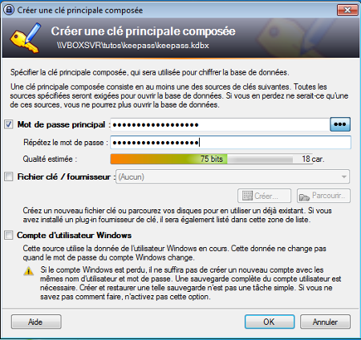
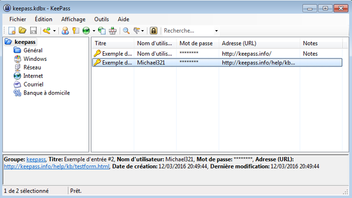
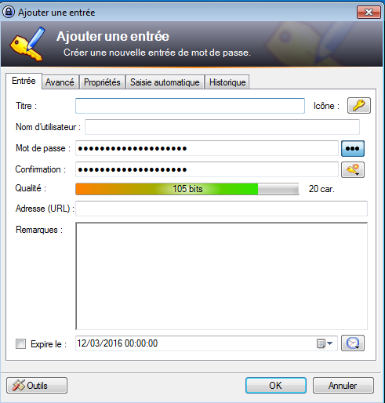

Les mots de passe
Utilisation d'un gestionnaire de mot de passe
Qu'est ce qu'un bon mot de passe
Personnel et secret
- Un mot de passe que plusieurs personnes connaissent n'est pas un mot de passe
- Ne faites confiance à personne
Complexe
- Introuvable en ingénierie social
- Long (minimum 8 caractères)
- Utilisez des caractères spéciaux
- Alternez la casse (majuscule/minuscule)
Unique
- Isole les services
- Évite les risques de fuite
Non figé
- Renouvellez régulièrement vos mots de passe
- Encore plus fréquemment pour un environment pro
- Ne reprennez jamais un ancien mot de passe
Testez vos mots de passe
HowSecureIsMyPassword.netRésumé
Il faut un mot de passe :
personnel, complexe, unique et le modifier régulièrement
personnel, complexe, unique et le modifier régulièrement
Comment les retenir ?
- Les noter sur un carnet
- Les enregistrer dans le navigateur
Utiliser un gestionnaire de mot de passe
Les gestionnaires
de mot de passe
- LastPass
- 1Password
- KeePass
KeePass
- keepass.info
- Version portable ?
- En français ?
Création d'une base de donnée
L'interface
Ajouter une entrée
Le générateur

Les extensions
- Pour Firefox : Passifox
- Pour Chrome : chromelPass
- KeePassHttp ?